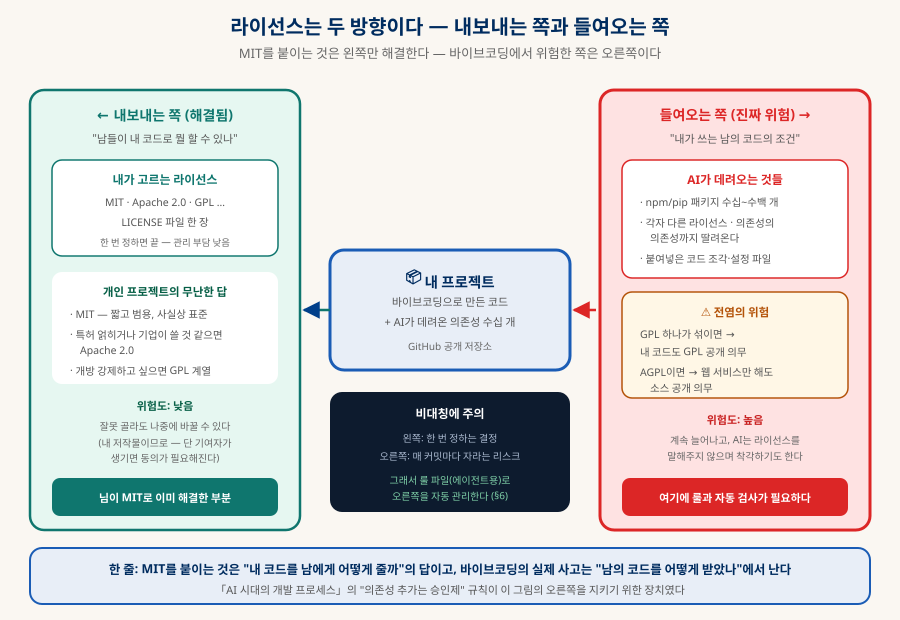
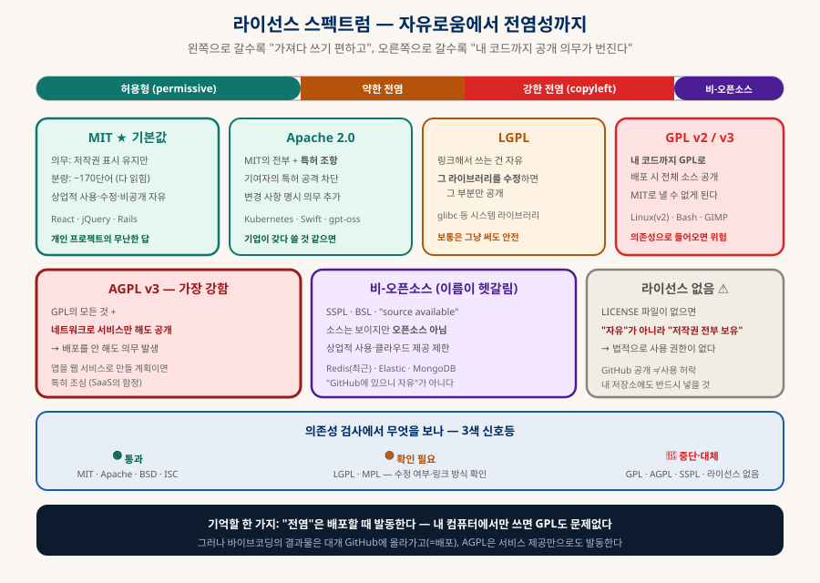
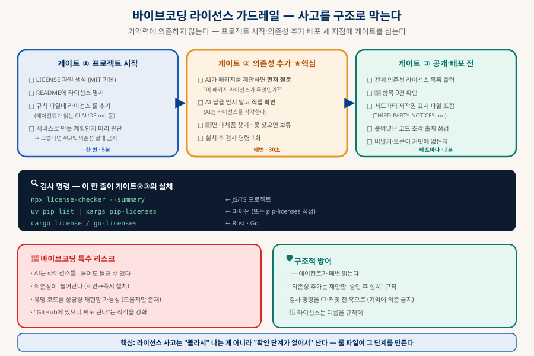

오픈소스 라이선스와 바이브코딩
MIT를 붙이는 것으로는 절반만 해결된다
GitHub에 코드를 올리려면 라이선스를 정해야 한다. 그런데 라이선스 문제는 두 방향으로 존재하고, MIT를 고르는 것은 그중 내보내는 쪽만 해결한다. 바이브코딩에서 실제 사고가 나는 곳은 들여오는 쪽 — AI가 데려온 의존성들의 조건이다. 스펙트럼 지도부터 에이전트 룰 파일까지, 분쟁을 구조로 막는 방법을 정리한다.
0. 한눈에 보기 — 결론 네 줄
급한 사람을 위한 요약
들여오기(진짜 위험) (§1)
— 유지해도 좋다 (§3)
내 코드도 공개 의무 (§2)
세 지점에 검사 (§5)
1. 두 방향 — 내보내기와 들여오기
MIT를 붙이는 것은 왼쪽만 해결한다

| 내보내는 쪽 (내 라이선스) | 들여오는 쪽 (남의 라이선스) | |
|---|---|---|
| 질문 | "남들이 내 코드로 무엇을 할 수 있나" | "내가 쓰는 남의 코드의 조건은 무엇인가" |
| 실체 | LICENSE 파일 한 장 | 패키지 수십~수백 개 + 그들의 의존성까지 |
| 관리 부담 | 한 번 정하면 끝 | 매번 늘어난다 — AI가 제안할 때마다 |
| 최악의 결과 | 남들이 안 쓴다 (되돌릴 수 있음) | 내 코드가 공개 의무에 묶인다 (되돌리기 어려움) |
| 해결 방법 | MIT 고르기 (§3) | 룰 + 자동 검사 (§5~6) |
2. 라이선스 스펙트럼 — 자유로움에서 전염성까지
왼쪽으로 갈수록 쓰기 편하고, 오른쪽으로 갈수록 공개 의무가 번진다

| 라이선스 | 성격 | 남이 쓸 때의 의무 | 대표 프로젝트 |
|---|---|---|---|
| MIT | 허용형 | 저작권 표시 유지만 | React · jQuery · Rails |
| Apache-2.0 | 허용형 + 특허 | 표시 유지 + 변경 사항 명시 + 특허 보복 방지 | Kubernetes · Swift · gpt-oss·Bonsai(로컬 모델 문서) |
| BSD 2/3-Clause · ISC | 허용형 | MIT와 거의 동일 (3-Clause는 이름 도용 금지 추가) | FreeBSD · Node 생태계 다수 |
| LGPL | 약한 전염 | 링크는 자유 — 그 라이브러리를 수정하면 그 부분 공개 | glibc |
| MPL-2.0 | 약한 전염 | 파일 단위 — 수정한 파일만 공개 | Firefox |
| GPL v2/v3 | 강한 전염 | 내 코드까지 전부 GPL로 공개 | Linux(v2) · Bash · GIMP |
| AGPL v3 | 가장 강함 | GPL + 네트워크 서비스만 해도 소스 공개 | Grafana · 일부 DB |
| SSPL · BUSL · Elastic | 오픈소스 아님 | 상업적 사용·클라우드 제공 제한 | Redis(최근) · Elastic · MongoDB |
| 라이선스 없음 | 권한 없음 | 저작권 전부 보유 — 법적으로 사용 불가 | GitHub의 수많은 개인 저장소 |
＋실제 조항 뜯어보기 — 원문은 무엇을 말하나
"저작권 표시 유지"·"전염" 같은 요약은 편하지만 정확한 비교가 안 된다. 아래 각 라이선스를 눌러 핵심 조항의 원문과 번역을 확인하라 — 실제 문구를 보면 무엇이 의무이고 무엇이 아닌지가 분명해진다. (전문이 아니라 핵심 발췌이며, 원문 링크를 함께 둔다.)
MIT — 의무는 사실상 한 문장뿐 🟢 허용형
허용 범위 (전부 나열돼 있다)
유일한 의무
면책 (대문자로 강조된 부분)
읽는 법 — 의무 조항이 단 한 문장이고, 그 내용도 "고지를 포함하라"뿐이다. "상당 부분(substantial portions)"이라는 표현 때문에 코드를 일부만 가져다 써도 고지 의무가 생긴다는 점, 그리고 소스가 아닌 실행 파일로 배포할 때도 고지를 어딘가(문서·앱의 정보 화면)에 넣어야 한다는 점이 실무 포인트다. 원문 ↗
Apache-2.0 — MIT + 특허 + 변경 고지 🟢 허용형
§3 특허 라이선스 — MIT에 없는 핵심
§4 재배포 의무 — 네 가지
MIT와의 실질 차이 — ① 특허를 명시적으로 부여하고 소송 시 회수한다(기업이 안심하고 채택하는 이유) ② 파일을 고치면 "고쳤다"고 표시해야 한다 ③ NOTICE 파일 관행이 있다. 대신 문서가 길어(수 페이지) 개인 프로젝트엔 과할 수 있다. 원문 ↗
BSD 3-Clause — MIT + "이름 도용 금지" 한 줄 🟢 허용형
읽는 법 — 1·2조는 MIT와 사실상 같고(소스·바이너리 배포 시 고지 유지), 3조만 추가된 형태다. "우리 제품은 ○○팀이 보증합니다" 같은 후광 효과 도용을 막는 조항 — 실무에서 이 조항 때문에 곤란해질 일은 거의 없다. BSD 2-Clause는 이 3조를 뺀 것으로 MIT와 거의 동일하다. 원문 ↗
LGPL — "라이브러리는 GPL, 내 앱은 자유" 🟡 약한 전염
핵심 — GPL을 상속하되 예외를 둔다
단, 두 가지 조건이 붙는다
실무 판단 — 라이브러리를 수정하지 않고 동적 링크로 쓰면 내 코드는 비공개 가능. 반대로 라이브러리를 수정했거나 정적 링크해서 교체가 불가능하게 만들면 의무가 커진다. 그래서 §2 표에서 🟡(확인 필요)로 분류했다 — "어떻게 쓰는가"가 결과를 바꾸는 유일한 계열이다. 원문 ↗
GPL v3 — 전염의 실제 문구 🔴 강한 전염
§5 — "전염"이라 불리는 그 조항
§6 — 소스를 반드시 함께
발동 조건 — "convey(배포)"의 정의
읽는 법 — 마지막 인용이 핵심이다 — GPL은 배포할 때만 발동하므로, 웹 서비스로만 제공하면 소스 공개 의무가 없다(이 구멍을 막은 것이 아래 AGPL). 반대로 GitHub에 코드를 올리거나 실행 파일을 나눠주면 "전체를 GPL로"가 발동한다 — MIT 배포가 불가능해지는 지점. 원문 ↗
AGPL v3 — 서비스 제공만으로 발동하는 §13 🔴 가장 강함
§13 — GPL과 다른 단 하나의 조항
읽는 법 — GPL의 "배포하지 않으면 의무 없음"이라는 구멍 (SaaS로 서비스만 하고 소스는 안 주는 것)을 정확히 겨냥해 막은 조항이다. 웹앱·API 서버를 만들 계획이라면 AGPL 의존성은 프로젝트 전체를 공개 의무에 묶는다 — 룰 파일 §0에서 "SaaS 여부"를 먼저 정하게 한 이유가 이것이다. 원문 ↗
SSPL — "오픈소스처럼 보이는" 조항 🟣 오픈소스 아님
§13 — 서비스로 제공하려면 "전체 스택"을 공개하라
읽는 법 — AGPL이 "그 프로그램의 소스"를 요구한다면, SSPL은 운영 인프라 전체를 요구한다 — 사실상 클라우드 사업자가 제품화하는 것을 불가능하게 만드는 조항이다. OSI(오픈소스 이니셔티브)는 이를 오픈소스로 승인하지 않았다. BUSL(Business Source License)·Elastic License도 성격이 비슷하다(기간 후 오픈소스 전환·상업적 제한 등). "GitHub에 있고 소스가 보인다"와 "오픈소스다"는 다른 말이다. 원문 ↗
라이선스 없음 — 문구가 없다는 것의 의미 ⚫ 사용 권한 없음
인용할 조항이 없다 — 그것이 핵심이다. 저작권법의 기본 원칙은 "명시적으로 허락하지 않은 것은 금지"이므로, LICENSE 파일이 없는 코드는 저작권자가 모든 권리를 보유한 상태다.
실무 — 남의 코드: 라이선스 없으면 쓰지 않는다(저자에게 문의). 내 코드: 공개 저장소에 LICENSE가 없으면 아무도 합법적으로 쓸 수 없다 — 공개의 목적이 무색해지므로 반드시 넣는다. GitHub 문서 ↗
3. 내 코드에 무엇을 붙일까 — MIT vs Apache 2.0
실질적 갈림길은 이 둘 사이뿐이다
개인 프로젝트라면 MIT가 무난한 정답이다 — 약 170단어로 짧아 누구나 읽어서 이해할 수 있고, 사실상 "표시만 남기고 알아서 쓰세요"다. 그럼 언제 Apache 2.0을 고려하는가:
| MIT | Apache-2.0 | |
|---|---|---|
| 분량 | ~170단어 — 다 읽힌다 | 수 페이지 — 법무팀이 읽는다 |
| 특허 | 명시 조항 없음 | 특허 라이선스 명시 부여 + 기여자의 특허 공격 차단 |
| 변경 고지 | 불필요 | 변경한 파일에 표시 의무 |
| 어울리는 곳 | 개인 유틸·학습·소규모 라이브러리 | 기업 채택을 기대하거나 특허가 얽힐 기술 |
MIT를 유지해도 좋은 경우
개인 프로젝트, 유틸리티, 학습용 코드, 특허와 무관한 애플리케이션 — 지금 상태를 바꿀 이유가 없다.
Apache 2.0으로 갈 만한 경우
회사가 갖다 쓸 것을 기대하거나(특허 조항이 채택 장벽을 낮춘다), 알고리즘·기술적 발명이 얽힌 프로젝트. gpt-oss·Bonsai 같은 모델들이 이걸 쓰는 이유.
지금 정하는 것이 싼 이유
나중에 바꿀 수는 있지만, 외부 기여자가 생기면 그들의 동의가 필요해진다 — 기여자가 늘기 전에 정하는 것이 훨씬 싸다.
4. 바이브코딩의 특수 리스크
사람이 손으로 코딩할 때는 없던 위험 네 가지
| 리스크 | 왜 생기나 | 대응 |
|---|---|---|
| 라이선스가 대화에 등장하지 않는다 | AI는 패키지를 추천하며 라이선스를 언급하지 않는다 — 사람은 검색하다 자연히 보게 되는데 그 눈길이 생략됨 | 규칙 파일에 "제안 시 라이선스 명시" 의무화(§6) |
| AI가 라이선스를 착각한다 | 학습 데이터 시점 이후 변경(Redis·Elastic처럼 라이선스가 바뀐 사례 다수) + 단순 혼동 | AI 답을 믿지 말고 npm/PyPI 페이지·저장소 LICENSE로 직접 확인 |
| 의존성이 판단 없이 늘어난다 | "이거 설치할게요" → 즉시 실행되는 흐름 | "의존성 추가는 제안만, 승인 후 설치" — 「AI 시대의 개발 프로세스」의 그 규칙 |
| 코드 재현 가능성 | 드물지만 유명 저장소의 특징적 코드를 상당량 재현할 수 있다 | "특정 프로젝트 코드를 그대로 재현하지 않는다" 규칙 + 이상하게 완성도 높은 덩어리는 출처 확인 |
5. 가드레일 — 세 개의 게이트
라이선스 사고는 "몰라서"가 아니라 "확인 단계가 없어서" 난다

| 게이트 | 빈도 | 체크 항목 |
|---|---|---|
| ① 프로젝트 시작 | 한 번 · 5분 | LICENSE 파일 생성 · README 명시 · 규칙 파일에 라이선스 룰 연결 · 배포 형태 결정(SaaS면 AGPL 절대 금지선이 여기서 정해진다) |
| ② 의존성 추가 ★ | 매번 · 30초 | 제안 시 라이선스 확인 → AI 답을 직접 검증 → 3색 판정 → 🔴이면 대체품 탐색 → 설치 후 검사 1회 |
| ③ 공개·배포 전 | 배포마다 · 2분 | 전체 목록 출력 · 🔴 0건 확인 · 서드파티 고지 파일 갱신 · 붙여넣은 코드 출처 점검 · 비밀키 미포함 |
# JS / TS npx license-checker --summary npx license-checker --failOn "GPL-3.0;AGPL-3.0;SSPL-1.0" ← CI에서 자동 차단 # Python pip install pip-licenses && pip-licenses --format=markdown # Rust · Go cargo license go-licenses report ./...
6. 에이전트 룰 파일 — 이 저장소에 준비돼 있다
바이브코딩할 때 AI가 매번 읽는 규칙으로 만들어두면 관리가 자동화된다
위 내용을 실제로 작동시키는 방법은 규칙 파일에 명문화하는 것이다 — 「클로드 확장하기」에서 다룬 CLAUDE.md·규칙 파일이 그 자리이고, 에이전트가 세션마다 자동으로 읽는다. 이 저장소에 바로 쓸 수 있는 룰 파일이 들어 있다:
# 새 프로젝트의 규칙 파일(CLAUDE.md 등)에 붙여넣기 cat ~/Desktop/Dev/knowledge-db/rules/LICENSE-RULES.md >> CLAUDE.md # 또는 §8의 한 문단 요약만 규칙 파일에 넣고, 전문은 참조로 두기
| 룰 파일의 구성 | 내용 |
|---|---|
| §0 프로젝트 설정 | 내 라이선스 · 배포 형태 체크박스 — SaaS 여부가 AGPL 금지선을 정한다 |
| §1 절대 규칙 6개 | 의존성은 제안만 · 라이선스 함께 명시 · 🔴 제안 금지 · 외부 코드 붙여넣기 금지 · LICENSE 임의 변경 금지 · 비밀키 금지 |
| §2 3색 신호등 | 🟢/🟡/🔴 라이선스 이름을 명시적으로 나열 — 에이전트가 판단하지 않고 조회하게 |
| §3 세 게이트 | §5의 체크리스트를 그대로 (체크박스 형식) |
| §4 고지 파일 형식 | THIRD-PARTY-NOTICES.md 템플릿 |
| §5 검사 명령 | 생태계별 명령 + CI 차단 방법 |
| §6~7 AI 코드·라이선스 고르기 | AI 생성물 입장 정리 + 내 라이선스 선택 표 |
| §8 한 문단 요약 | 규칙 파일에 넣을 압축판 — 이것만 붙여도 핵심은 작동한다 |
7. 자주 헷갈리는 것들
실무에서 반복되는 질문들
| 질문 | 답 |
|---|---|
| GPL 라이브러리를 쓰면 무조건 공개해야 하나? | 아니다 — 배포할 때 발동한다. 내 컴퓨터에서만 쓰면 무관. 단 GitHub 공개도 배포이고, AGPL은 서비스 제공만으로 발동 |
| 개발 도구(devDependency)도 전염되나? | 일반적으로 아니다 — 빌드에만 쓰이고 결과물에 포함되지 않으면 대개 무관(예: GPL 린터). 단 결과물에 코드가 섞여 들어가는지가 판단 기준 |
| MIT 패키지를 썼는데 저작권 표시를 안 했다 | 형식적으로는 의무 위반이다. 대부분 프로젝트가 지키지 않지만, THIRD-PARTY-NOTICES.md 한 장으로 해결되니 갖추는 게 낫다 |
| 라이선스를 나중에 바꿀 수 있나? | 내 코드만이면 가능. 외부 기여자가 있으면 그들의 동의 필요 — 초기에 정하는 것이 싸다 |
| private 저장소면 신경 안 써도 되나? | 배포가 없으니 전염은 발동하지 않는다. 단 언젠가 공개·배포할 가능성이 있으면 그때 걷어내기가 재작성급이 된다 |
| Redis·Elastic이 "오픈소스 아님"이라니? | 예전엔 오픈소스였다가 클라우드 업체의 무단 활용에 대응해 라이선스를 바꿨다 — AI가 옛 정보로 답할 수 있는 대표 사례(§4) |
| AI가 만든 코드를 MIT로 내도 되나? | 실무적으로 대개 문제없다(§4의 콜아웃) — 남는 리스크는 기존 코드 재현 부분 |
| 문서·이미지도 코드 라이선스로 덮이나? | LICENSE 파일의 범위에 따른다 — 보통은 코드 기준이라, 문서·자산은 CC BY 등으로 별도 표기하는 것이 명확 |
8. 함께 읽기
이 문서에서 갈라지는 길들
- choosealicense.com (GitHub) §3. 라이선스 고르기 공식 가이드 — 질문 몇 개로 추천해준다.
- TLDRLegal §2. 라이선스 전문을 "할 수 있는 것/못 하는 것/해야 하는 것"으로 요약.
- SPDX License List §5. 검사 도구가 쓰는 표준 식별자 목록(MIT·Apache-2.0·GPL-3.0-only 등).
| 주제 | 문서 |
|---|---|
| "의존성 추가는 승인제" 규칙의 맥락 | 「AI 시대의 개발 프로세스」 §2·§7 — 기계 게이트에 라이선스 검사 추가 |
| 규칙 파일로 에이전트를 통제하는 법 | 「클로드 확장하기」 §2·§8 — 하네스 엔지니어링 |
| 패키지·레지스트리의 구조 (3~5층) | 「개발 생태계 해부」 §4-B — 공급망 보안과 같은 자리 |
| GitHub 저장소 운영 기본 | 「Git & GitHub 정리」 |